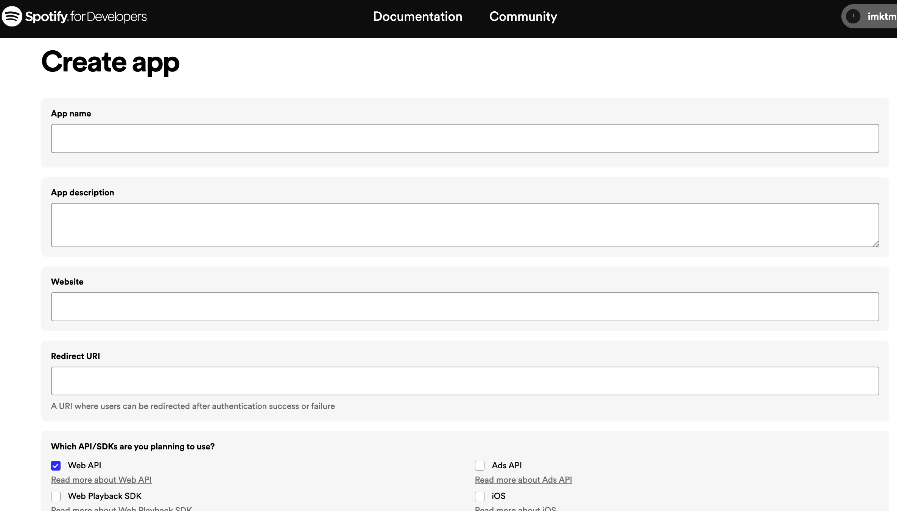
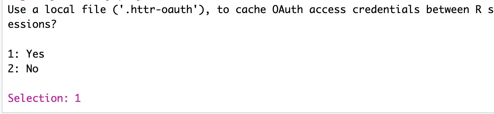
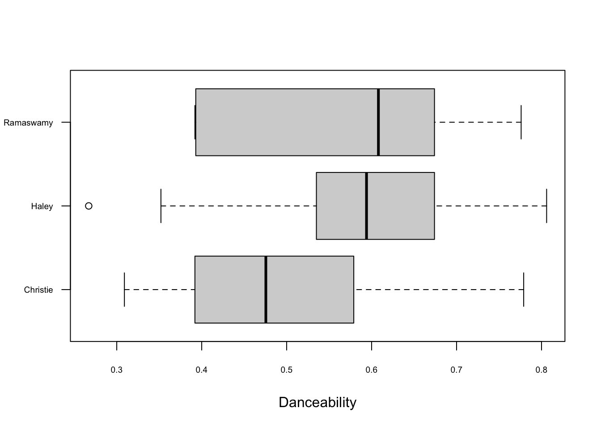
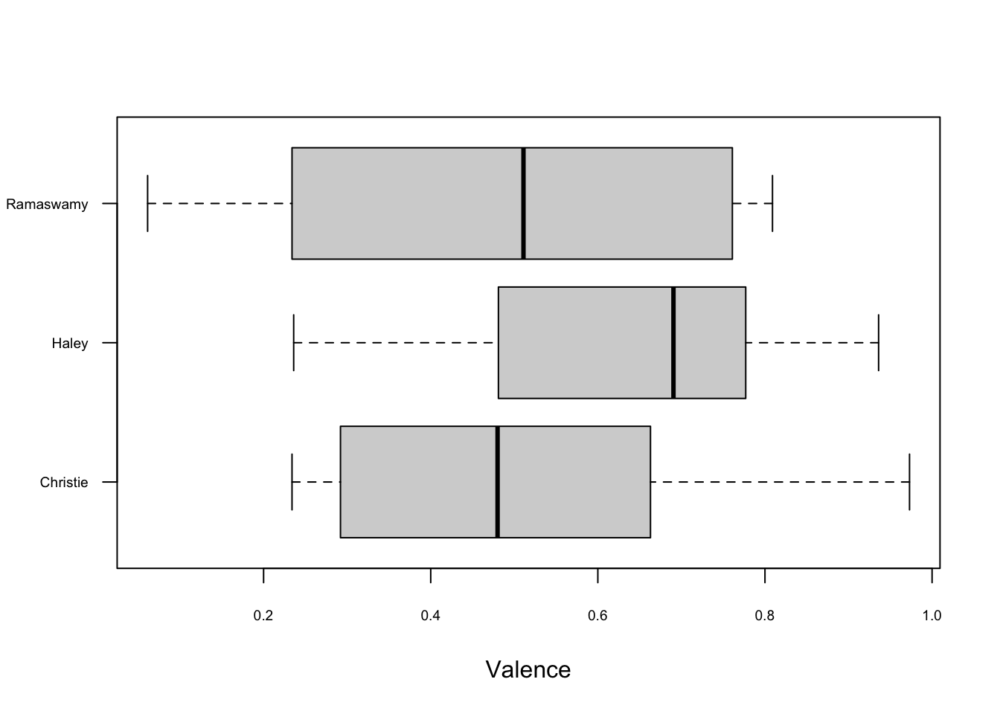

install.packages("sotu", dependencies = T)
install.packages("tm", dependencies = T)
install.packages("SnowballC", dependencies = T)
install.packages("wordcloud", dependencies = T)
install.packages("stringr", dependencies = T)11 Text as Data
Recall that we said, four primary goals of social science include:
- Describe and measure
- Has the U.S. population increased?
- Explain, evaluate, and recommend (study of causation)
- Does expanding Medicaid improve health outcomes?
- Predict
- Who will win the next election?
- Discover
- How do policies diffuse across states?
In this section, we start to explore the goal of discovery, seeing what we can learn from text as data.
11.1 Why text?
Words (can) matter. Patterns of word usage can be suggestive of deeper divides.

Article from Deadspin

Article from NY Times
Why Use R to analyze text?
- Assist in reading large amounts of text


- Efficiently summarize text through quantifying text attributes
- (Can) remove some subjectivity in coding text, allow to discover aspects of text unknown a priori
11.2 R Packages for text
Packages are like apps on your phone. They give you additional functionality. To use the tools in a package you first have to install it.
After you install it, just like on a phone, anytime you want to use the app, you need to open it. In R, we do that with library().
library(sotu)
library(tm)
library(SnowballC)
library(wordcloud)
library(stringr)11.3 Application: State of the Union
For a video explainer of the code for the State of the Union application on pre-processing text and dictionary analysis, see below. (Via youtube, you can speed up the playback to 1.5 or 2x speed.)
The sotu package includes a dataset with the text of every U.S. State of the Union speech. It also includes second dataset with information about the speech. When datasets are stored in a package, you can add them to your environment through the data() function.
data(sotu_meta)
data(sotu_text)We are going to “bind” these together into a new dataframe. That way, the sotu_text is a variable inside of our speeches dataframe.
speeches <- cbind(sotu_meta, sotu_text)
names(speeches)[1] "X" "president" "year" "years_active" "party"
[6] "sotu_type" "sotu_text" 11.3.1 Cleaning Text
Note that when working with raw text data, we usually do want our variables to be character variables and not factor variables. Here, every cell is not a category. Instead, it is a speech!
class(speeches$sotu_text)[1] "character"Text is messy data. We may want to spruce it up a bit by removing some of the non-essential characters and words, and moving everything to lowercase.
## Example of speech
speeches$sotu_text[1][1] "Fellow-Citizens of the Senate and House of Representatives: \n\nI embrace with great satisfaction the opportunity which now presents itself of congratulating you on the present favorable prospects of our public affairs. The recent accession of the important state of North Carolina to the Constitution of the United States (of which official information has been received), the rising credit and respectability of our country, the general and increasing good will toward the government of the Union, and the concord, peace, and plenty with which we are blessed are circumstances auspicious in an eminent degree to our national prosperity.\n\nIn resuming your consultations for the general good you can not but derive encouragement from the reflection that the measures of the last session have been as satisfactory to your constituents as the novelty and difficulty of the work allowed you to hope. Still further to realize their expectations and to secure the blessings which a gracious Providence has placed within our reach will in the course of the present important session call for the cool and deliberate exertion of your patriotism, firmness, and wisdom.\n\nAmong the many interesting objects which will engage your attention that of providing for the common defense will merit particular regard. To be prepared for war is one of the most effectual means of preserving peace.\n\nA free people ought not only to be armed, but disciplined; to which end a uniform and well-digested plan is requisite; and their safety and interest require that they should promote such manufactories as tend to render them independent of others for essential, particularly military, supplies.\n\nThe proper establishment of the troops which may be deemed indispensable will be entitled to mature consideration. In the arrangements which may be made respecting it it will be of importance to conciliate the comfortable support of the officers and soldiers with a due regard to economy.\n\nThere was reason to hope that the pacific measures adopted with regard to certain hostile tribes of Indians would have relieved the inhabitants of our southern and western frontiers from their depredations, but you will perceive from the information contained in the papers which I shall direct to be laid before you (comprehending a communication from the Commonwealth of Virginia) that we ought to be prepared to afford protection to those parts of the Union, and, if necessary, to punish aggressors.\n\nThe interests of the United States require that our intercourse with other nations should be facilitated by such provisions as will enable me to fulfill my duty in that respect in the manner which circumstances may render most conducive to the public good, and to this end that the compensation to be made to the persons who may be employed should, according to the nature of their appointments, be defined by law, and a competent fund designated for defraying the expenses incident to the conduct of foreign affairs.\n\nVarious considerations also render it expedient that the terms on which foreigners may be admitted to the rights of citizens should be speedily ascertained by a uniform rule of naturalization.\n\nUniformity in the currency, weights, and measures of the United States is an object of great importance, and will, I am persuaded, be duly attended to.\n\nThe advancement of agriculture, commerce, and manufactures by all proper means will not, I trust, need recommendation; but I can not forbear intimating to you the expediency of giving effectual encouragement as well to the introduction of new and useful inventions from abroad as to the exertions of skill and genius in producing them at home, and of facilitating the intercourse between the distant parts of our country by a due attention to the post-office and post-roads.\n\nNor am I less persuaded that you will agree with me in opinion that there is nothing which can better deserve your patronage than the promotion of science and literature. Knowledge is in every country the surest basis of public happiness. In one in which the measures of government receive their impressions so immediately from the sense of the community as in ours it is proportionably essential.\n\nTo the security of a free constitution it contributes in various ways - by convincing those who are intrusted with the public administration that every valuable end of government is best answered by the enlightened confidence of the people, and by teaching the people themselves to know and to value their own rights; to discern and provide against invasions of them; to distinguish between oppression and the necessary exercise of lawful authority; between burthens proceeding from a disregard to their convenience and those resulting from the inevitable exigencies of society; to discriminate the spirit of liberty from that of licentiousness - cherishing the first, avoiding the last - and uniting a speedy but temperate vigilance against encroachments, with an inviolable respect to the laws.\n\nWhether this desirable object will be best promoted by affording aids to seminaries of learning already established, by the institution of a national university, or by any other expedients will be well worthy of a place in the deliberations of the legislature.\n\nGentlemen of the House of Representatives: \n\nI saw with peculiar pleasure at the close of the last session the resolution entered into by you expressive of your opinion that an adequate provision for the support of the public credit is a matter of high importance to the national honor and prosperity. In this sentiment I entirely concur; and to a perfect confidence in your best endeavors to devise such a provision as will be truly with the end I add an equal reliance on the cheerful cooperation of the other branch of the legislature.\n\nIt would be superfluous to specify inducements to a measure in which the character and interests of the United States are so obviously so deeply concerned, and which has received so explicit a sanction from your declaration. \n\nGentlemen of the Senate and House of Representatives: \n\nI have directed the proper officers to lay before you, respectively, such papers and estimates as regard the affairs particularly recommended to your consideration, and necessary to convey to you that information of the state of the Union which it is my duty to afford.\n\nThe welfare of our country is the great object to which our cares and efforts ought to be directed, and I shall derive great satisfaction from a cooperation with you in the pleasing though arduous task of insuring to our fellow citizens the blessings which they have a right to expect from a free, efficient, and equal government. GEORGE WASHINGTON\n"## clean text
speeches$sotu_text <- tolower(speeches$sotu_text)
speeches$sotu_text <- stripWhitespace(speeches$sotu_text)
speeches$sotu_text <- removeWords(speeches$sotu_text, stopwords(kind="en"))
speeches$sotu_text <- removePunctuation(speeches$sotu_text)
speeches$sotu_text <- removeNumbers(speeches$sotu_text)
#speeches$sotu_text <- stemDocument(speeches$sotu_text) # we will hold offNote: What you might consider non-essential could differ depending on your application. Maybe you want to keep numbers in your text, for example.
11.3.2 Preparing a Corpus
## turn text into corpus
sotu.corpus <- Corpus(VectorSource(speeches$sotu_text))
## turn into Document-Term-Matrix
sotu.dtm <- DocumentTermMatrix(sotu.corpus)## preview
inspect(sotu.dtm[,10:20])<<DocumentTermMatrix (documents: 240, terms: 11)>>
Non-/sparse entries: 1404/1236
Sparsity : 47%
Maximal term length: 11
Weighting : term frequency (tf)
Sample :
Terms
Docs affairs afford affording agree agriculture aids allowed already also
113 2 5 0 0 7 0 1 16 23
117 3 9 1 0 2 1 8 17 23
119 2 2 0 2 8 2 3 21 16
124 8 1 0 3 6 3 2 13 25
158 8 5 0 1 22 5 2 25 44
188 6 1 0 3 2 0 0 13 94
190 6 7 0 0 6 0 1 23 89
197 2 2 0 0 8 0 2 11 44
199 4 8 0 0 9 0 1 23 82
201 8 3 0 0 9 0 4 11 72
Terms
Docs among
113 12
117 23
119 11
124 10
158 12
188 6
190 8
197 9
199 14
201 1711.3.3 Word Frequency
Convert the “Document-Term-Matrix” into a matrix using as.matrix()
sotu.dtm.mat <- as.matrix(sotu.dtm)
## Most frequent words
head(sort(sotu.dtm.mat[1,], decreasing=T), n=10) will may public country end government great
14 5 5 4 4 4 4
measures regard states
4 4 4 head(sort(sotu.dtm.mat[236,], decreasing=T), n=10) america now people will just work american world
28 27 27 26 25 22 22 22
make can
20 19 Note: these are somewhat generic words.
Word Cloud
wordcloud(words=names(sotu.dtm.mat[1,]),
freq=sotu.dtm.mat[1,], max.words = 20)
11.4 Word Importance
We use tf-idf (term frequency - inverse document frequency) as a way to pull out uniquely important/relevant words for a given character.
- Relative frequency of a term inversely weighted by the number of documents in which the term appears.
- Functionally, if everyone uses the word “know,” then it’s not very important for distinguishing characters/documents from each other.
- We want words that a speech used frequently, that other speeches use less frequently
## words uniquely important to a character
sotu.tfidf <- weightTfIdf(sotu.dtm)
## convert to matrix
sotu.tfidf.mat <- as.matrix(sotu.tfidf)We can summarize the uniquely relevant words for each speech
Gw1790.tfidf <-head(sort(sotu.tfidf.mat[1,], decreasing=T), n=8)
BO2016.tfidf <-head(sort(sotu.tfidf.mat[236,], decreasing=T), n=8)Gw1790.tfidf intimating licentiousness discern inviolable derive
0.01532343 0.01532343 0.01338545 0.01225180 0.01181748
persuaded cherishing comprehending
0.01181748 0.01082357 0.01082357 barplot(Gw1790.tfidf, cex.axis=.7,
cex.names=.7,
main= "Most `Important' 1790 SOTU Words (tf-idf)",
horiz = T, las=2)
barplot(BO2016.tfidf,
cex.names=.7, cex.axis=.7,
main= "Most `Important' 2016 SOTU Words (tf-idf)",
horiz=T, las=2)
11.5 Additional Descriptive Statistics
Are the length of speeches changing? The nchar() function tells you the number of characters in a “string.”
speeches$speechlength <- nchar(speeches$sotu_text)Let’s plot the length of speeches over time and annotate with informative colors and labels.
Is the length of speeches changing?
plot(x=1:length(speeches$speechlength), y= speeches$speechlength,
pch=15,
xaxt="n",
xlab="",
ylab = "Number of Characters")
## add x axis
axis(1, 1:length(speeches$speechlength), labels=speeches$year, las=3, cex.axis=.7)We can add color to distinguish written vs. spoken speeches
speechcolor <- ifelse(speeches$sotu_type == "written", "black", "green3")
plot(x=1:length(speeches$speechlength), y= speeches$speechlength,
xaxt="n", pch=15,
xlab="",
ylab = "Number of Characters",
col = speechcolor)
## add x axis
axis(1, 1:length(speeches$speechlength), labels=speeches$year, las=3, cex.axis=.7)
## add legend
legend("topleft", c("spoken", "written"),
pch=15,
col=c("green3", "black"), bty="n")11.5.1 Dictionary Analysis
We can characterize the content of speeches in different ways. For example, we can see if speeches mention specific words, such as `“terrorism.”
- The function
grepl()lets you search for a pattern of text in a character string - The function
str_detect()works similarly with the opposite order of inputs
speeches$terrorism <- ifelse(grepl("terror", speeches$sotu_text), 1,0)
speeches$terrorism2 <- ifelse(str_detect(speeches$sotu_text,"terror"), 1,0)sort(tapply(speeches$terrorism, speeches$president, sum),
decreasing=T)[1:10] George W. Bush William J. Clinton Barack Obama
8 8 7
Ronald Reagan Donald Trump Franklin D. Roosevelt
6 4 4
Andrew Jackson Chester A. Arthur Grover Cleveland
2 2 2
Harry S Truman
2 We can characterize the content of speeches in different ways. For example, we can see if speeches mention specific words, such as “terrorism.”
- The function
str_count()counts the number of times a piece of text appears in a character string
speeches$terrorismcount <- str_count(speeches$sotu_text, "terror")sort(tapply(speeches$terrorismcount, speeches$president, sum),
decreasing=T)[1:10] George W. Bush Barack Obama William J. Clinton
171 37 29
Donald Trump Ronald Reagan Franklin D. Roosevelt
24 10 6
Lyndon B. Johnson Harry S Truman Jimmy Carter
5 3 3
Andrew Jackson
2 We can add multiple words with the | operator. This is often called a “dictionary analysis.”
speeches$warcount <- str_count(speeches$sotu_text,
"terror|war|military|drone")
sort(tapply(speeches$warcount, speeches$president, sum), decreasing=T)[1:10] Harry S Truman Theodore Roosevelt Franklin D. Roosevelt
554 481 441
James K. Polk Jimmy Carter Dwight D. Eisenhower
390 348 332
William McKinley George W. Bush Grover Cleveland
324 323 257
Ulysses S. Grant
233 What are possible limitations of this analysis?
11.6 Application Programming Interfaces
Application programming interfaces (APIs) are tools that allow you to search a large database to extract specific types of information. Social scientists often work with APIs to extract data from social media platforms, government agencies (e.g., U.S. Census), and news sites, among others.
Organizations that develop these APIs can control what types of information researchers can access. Often, they set limits on the types and quantities of information someone can collect. Companies also often monitor who accesses the information by requiring people to sign up for access, apply for access, and/or pay for access.
Example: Census API As an example of an API, the U.S. Census has an API that allows researchers to extract nicely formatted data summaries of different geographic units (e.g., all zip codes in the U.S.).
- Researchers can sign up here for an API “key” which allows the organization to monitor who is accessing what information.
Researchers Kyle Walker and Matt Herman have made an R package that makes working with the API easier.
- Example:
tidycensusfound here allows you to search Census data by providing the variables you want to extract

APIs can make a social scientist’s life easier by providing an efficient way to collect data. Without an API, researchers might have to resort to manually extracting information from online or writing an ad hoc set of code to “scrape” the information off of websites. This can be time consuming, against an organization or company’s policy, or even impossible in some cases. APIs are powerful and efficient.
However, because researchers cannot control the API, the downside is at any given time, an organization could change or remove API access. Researchers might also not have the full details of what information is included in the API, potentially leading to biased conclusions from the data. APIs are great, but we should use them with caution.
11.7 The Politics of Song Choice
When deciding to run for office, political candidates often think strategically about how to introduce themselves. In the lead up to the 2024 presidential election in the United States, several Republicans announced their candidacy for the primary nomination.
As this article in The Hill notes, oftentimes, the candidate celebrates their announcement with a theme song / walkout music / or common song they bring with them on the campaign trail. Politico went even further to ask candidates to submit their top 20 songs. Only some candidates responded, and in this application, we will analyze the playlists of some of the top candidates who submitted their song choices: Chris Christie, Nikki Haley, and Vivek Ramaswamy.
We will analyze some of these songs drawing on the Spotify API.
11.7.1 Setting Up the Spotify API
In order to follow along completely with the Spotify portion, you will need 1) a free account on Spotify https://open.spotify.com/, 2) a developer’s app on Spotify, and the 3) spotifyR package installed in RStudio.
After signing up for a free Spotify account, let’s create the developer’s app by
- going to https://developer.spotify.com/dashboard when you are signed in.
- Select “Create app”
- Give your app a name (can be anything) and description (e.g., For conducting political analysis)
- Set a redirect URI– this won’t matter much for our purposes, so you can use http://localhost:1410/.
- You can leave “website” blank
- Mark the check box for Web API

After “saving” the information, click on the “Settings” for the app, where you can view your Client ID and a button called, “View client secret.” We will use these in a moment. Note: do not share these with anyone. Treat these like passwords.
To R we go! We will access the Spotify API through an R package spotifyr. The first time you use this package, you will need to install it.
install.packages('spotifyr')Every other time, you will need to use the following code:
library(spotifyr)Now, we need to “authenticate” our connection with Spotify using our Client ID and Client Secret credentials. Replace the xxxxxxx’s below with your own credentials and generate the access_token which will be stored in your RStudio environment.
Sys.setenv(SPOTIFY_CLIENT_ID ='xxxxxxxxx')
Sys.setenv(SPOTIFY_CLIENT_SECRET = 'xxxxxxxxxx')
auth_object <- get_spotify_authorization_code(scope = scopes()[c(7,8,9,10,14,15)])11.7.2 Candidate Danceability and Valence
Now we can use the API! The first time you try to run a function using the API, you might see a message asking you to “cache” your credentials. If you are on your personal machine, this should be fine, and you can select 1 and hit enter/return in your bottom-left RStudio Console window.

We will retrieve the playlists from the candidates by providing the function get_playlist_audio_features() with the Spotify identifiers for each playlist. We store it in a dataframe object called candidates.
candidates <- get_playlist_audio_features(username="Politico",
playlist_uris = c("26rVnB3MN03kRyXXWwAne0", "6gk4Omuze4zSr1G2nK1nQ4","2kGJsgdiexWTVlWnTdGSIi"))Let’s compare the candidates on a few metrics, including danceability and valence using a boxplot.
boxplot(danceability~playlist_name, data=candidates, horizontal=TRUE, las=1,
names = c("Christie", "Haley",
"Ramaswamy"),
xlab="Danceability", ylab="",
cex.axis=.6)
We can also compare the “valence” of songs by candidate.
boxplot(valence~playlist_name, data=candidates, horizontal=TRUE, las=1,
names = c("Christie", "Haley",
"Ramaswamy"),
xlab="Valence", ylab="",
cex.axis=.6)
Wow, there is one song from Ramaswamy that has particularly low valence. Which song was this, and was it something the candidate emphasized?
vivek <- subset(candidates, playlist_name = "Vivek Ramaswamy's Top 8 Songs")
vivek$track.name[vivek$valence == min(vivek$valence)][1] "Lose Yourself"11.7.3 Saving R Objects
After you extract data from online, you may want to save them as a hard data file on your computer. This way if you close RStudio, you can reproduce the data.
R allows you to save any R object as an .RData file that can be opened with the load() command. This is discussed on pg. 24 of QSS Chapter 1.
We can demonstrate this now by saving candidates as an RData object. It will automatically save to your working directory, but you can also add a subfolder or alternative file path.
save(candidates, file = "candidates.RData")Then, you can load the file (if you happen to close R/RStudio, restart your computer, etc.) with the load command.
load("candidates.RData")